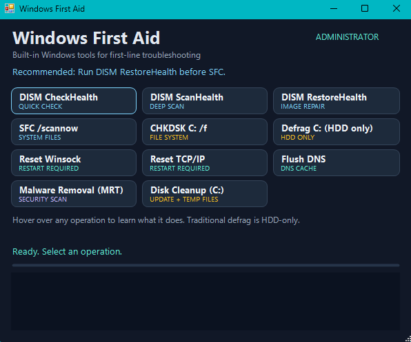

System integrity
DISM health checks and component-store repair, plus System File Checker for protected Windows files.
DESKTOP APPLICATION / FIRST-LINE IT SUPPORT
A simple graphical interface for commonly used built-in Windows maintenance utilities, developed with AI assistance.
OVERVIEW
I created Windows First Aid to make common Windows maintenance commands easier to access without repeatedly typing them. It complements Cortex: Windows First Aid provides convenient access to routine repair commands, while Cortex focuses on endpoint information and deeper diagnostic investigation.
DISM health checks and component-store repair, plus System File Checker for protected Windows files.
Check Disk, native Disk Cleanup and defragmentation restricted to confirmed mechanical hard drives.
DNS cache flushing and Winsock or TCP/IP reset options, with warnings about restart requirements and configuration changes.
Launches the Microsoft Malicious Software Removal Tool (MRT), a supplemental utility rather than a full antivirus replacement.
APPLICATION SHOWCASE

The compact interface features operation-specific hover descriptions, a live output console for supported tools, progress feedback and separate native prompts where needed.
SAFETY & IMPLEMENTATION
Requests confirmation before each action, with No selected by default and specific warnings for operations that change the system.
Requests administrator privileges through UAC and runs one operation at a time. It delegates maintenance to built-in Windows utilities.
Blocks traditional defragmentation when the system drive is an SSD or its media type cannot be confirmed.
Includes a portable batch launcher and an Inno Setup configuration for installing the utility and creating shortcuts.
Maintenance actions can modify system files, storage and network configuration. Use only on authorized devices, with appropriate backups and review of the operation-specific warnings.
RELATED PROJECT
Windows First Aid and Cortex serve complementary purposes in my personal IT toolkit. The tools support different stages of troubleshooting rather than replacing each other.
Explore Cortex Diagnostic ToolLEARNING OUTCOMES